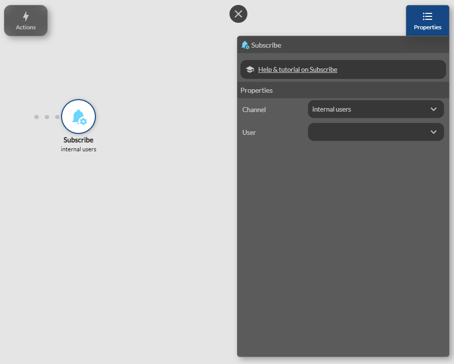

Push Notifications
Push Notifications are messages sent directly to a mobile device, even when the application is not open or running.
Available from the Enterprise plan.
They are an essential tool for keeping your users informed in real-time, reminding them of important events, or encouraging them to return to the app.
This feature is available on both iOS and Android, providing direct communication with your users on the two main platforms.
Follow these steps to activate and configure push notifications for your project, whether on iOS or Android.
Push notifications are well supported on Android, but their reliability may fluctuate depending on the manufacturer and the version of the operating system.
Activating Push Notifications
To enable push notifications in your application, go to the Settings section, then navigate to the Push Notifications section, and finally click on the Enable button.
Activating Push Notifications in the Mobile App
Push notifications also need to be enabled in the mobile app for each user. To do this, you should include a dedicated screen of your choice in the app that asks users for permission to receive notifications.

Create a dedicated screen in your application that explains to users why they should allow notifications.
- Add a button to enable users to subscribe to notifications.
- Use the Subscribe action, which allows the user to opt-in to receive notifications. This action will automatically request permission from the user.
The Subscribe action has two optional properties: User and Channel. These properties allow you to configure how notifications are received, targeting a specific user or a group of users.

Details of the properties:
- User: If this property is set, it means that the current user will receive personalized notifications intended for them.
- Channel: If you want to send notifications to a group of users, you can set this property with a channel name (e.g., premium subscribers, visitors, internal users, etc.). All users subscribed to this channel will receive the notifications.
- Empty Parameters: If both properties are left empty, the user will be subscribed to receive all general notifications.
Sending Notifications to Users
Once your users are subscribed, you can send them notifications based on their channel subscription or individually.
The user must have the application installed in order to receive push notifications.
Here are the actions you can use to send notifications:
- Send to all: Use this action to send a notification to all users who have enabled push notifications.
- Send to channel: With this action, you can send notifications only to users subscribed to a specific channel. This allows you to segment notifications according to specific user groups.
- Send to user: Use this action to send a notification to a specific user who has enabled notifications.
Example of Using Notifications
- If you want to inform all your users about an update, use Send to All.
- To send a notification only to your premium users, define a channel named "premium" and use Send to Channel with that channel.
- To notify a specific user about an action in the app, use Send to User and specify, for example, their email.